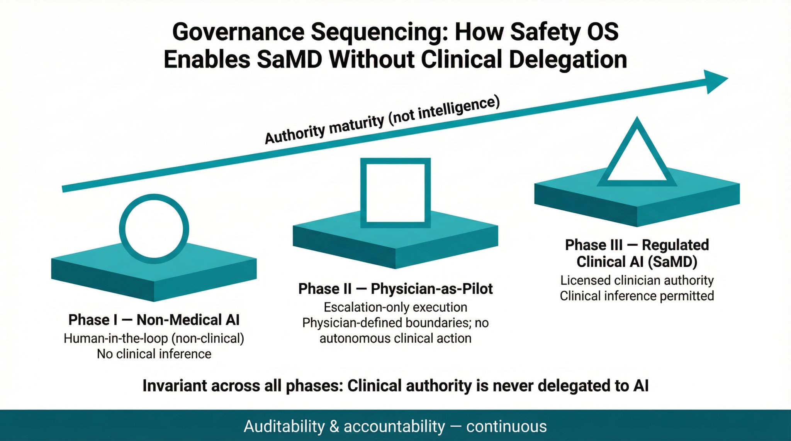

PatientCentricCare defines how AI systems safely mature in healthcare: starting non-medical, proving governance, and only expanding permissions once authority is controlled and traceable.

How AI Gets Permission to Act in Healthcare
Phase I — Non-Medical AI
Human-in-the-loop systems with no clinical inference.
Phase II — SaMD-Ready, Physician Supervised
Escalation-only execution within clinician-defined boundaries.
Phase III — Regulated Clinical AI (SaMD)
Licensed clinical authority with controlled inference.
Invariant: Clinical authority is never delegated to AI.
Explore how governance sequences decision authority:
Unlike most AI approaches that optimize capability first and add governance later, PatientCentricCare treats authority, enforcement, and auditability as infrastructure.
Governance is enforced at runtime, refusals are logged, escalations are attributable, and evidence is generated continuously — not retroactively.
Physician-as-Pilot
A regulatory-grade framework that ensures clinicians retain control over AI-enabled care, preventing unintended automation and preserving human authority.
Safety OS
The core governance layer that enforces clinical boundaries, manages escalation pathways, and provides an immutable audit trail for all AI-assisted actions.
Use Case: Post-Acute Rehabilitation
Supporting patients at home with protocol-driven exercise reminders and progress monitoring, without providing clinical feedback or diagnosis.
Prohibited Functions
Our systems are architecturally prohibited from performing diagnosis, prognosis, treatment recommendations, or any form of autonomous clinical decision-making.